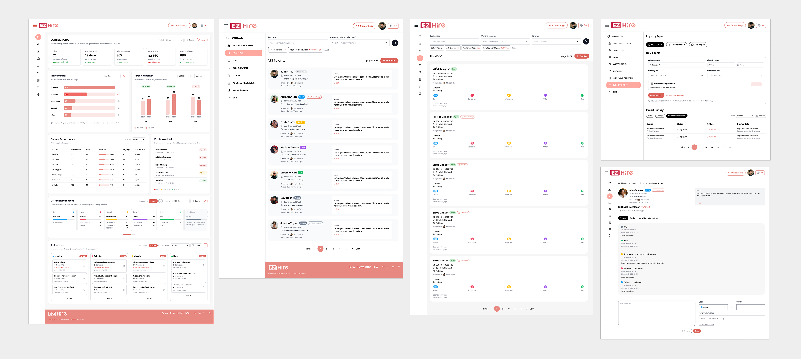
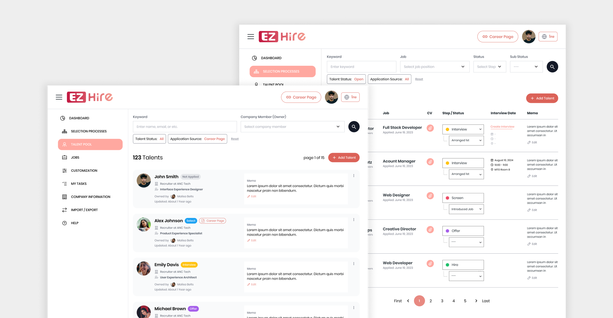
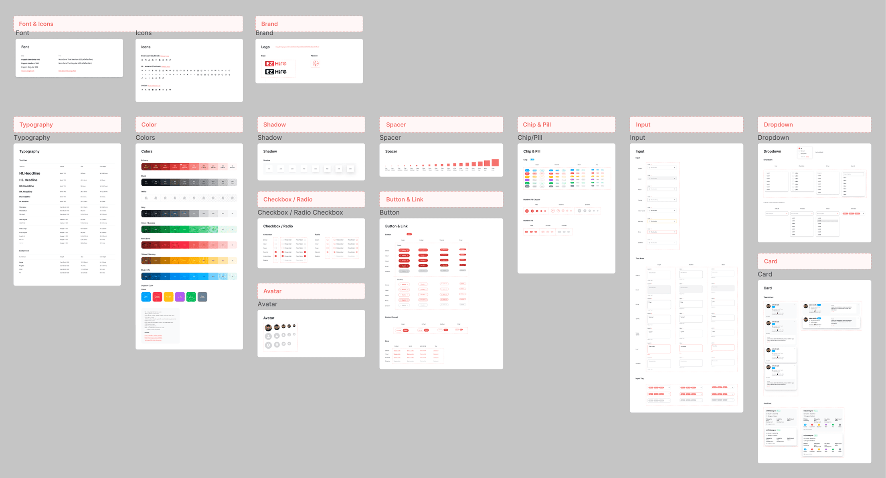

01. Overview
EZHire is a recruitment platform that brings a company’s Career Page and Applicant Tracking System (ATS) together. It helps recruiting teams publish jobs, receive candidates from different sources, organize selection processes, and collaborate with hiring teams.
I worked across the hiring experience, from company setup and job creation to candidate management, Career Page publishing, and recruitment operations. My work included researching feature requests, turning business requirements into user flows and interface designs, prototyping with Figma and Codex, and working closely with stakeholders, project managers, and developers through implementation review.

02. Problem
Recruiting work often spans several disconnected steps: publishing a job, collecting applications, reviewing candidate information, coordinating interviews, and keeping the hiring team aligned. When those steps happen across different channels or tools, recruiters may need to re-enter information, switch between systems, or rely on manual follow-up.
EZHire’s product challenge was to make those activities feel connected and manageable, especially for teams setting up their recruitment workflow for the first time.
03. Key UX Challenges
The challenge was to make the full hiring journey feel clear and connected—from setting up a company and publishing a job to managing candidates and coordinating with the hiring team. Each part needed to work on its own while guiding users smoothly to the next step.
Help new companies reach their first useful outcome
Creating an account is only the beginning. To start using the Career Page, a company needs to complete key setup information and create a job. The experience needs to explain what to do next and how each step contributes to publishing a job.
Connect job setup to Career Page publishing
A job can exist in the system without appearing on the company’s Career Page. That distinction can be easy to miss if the flow does not clearly explain when a job is ready to publish and what action is still required.
Make candidate information easier to manage
Recruiters need enough information to assess candidates, while candidates need an application experience that is understandable and reasonable to complete. The product must support both sides of that interaction.
Support collaboration across hiring teams
Recruitment can involve multiple members with different roles and responsibilities. The interface needs to make candidate progress, job status, and next actions understandable to the people involved.

04. Design Process
I translated the hiring journey into clear, consistent screens—focusing on information hierarchy, interaction patterns, and the UI details that help users understand what to do at each step.
Audit the interface and key flows
I reviewed the existing screens and mapped the main hiring journey—from company setup and job creation to publishing, candidate review, and interview coordination. This helped identify unclear labels, missing states, and points where users might not know what to do next.
Structure each screen around its primary task
I clarified information hierarchy, grouped related fields, and made primary actions easy to find. For setup and publishing flows, I used contextual guidance to show what was required and what would happen next.
Design the interaction details
I refined form behavior, show/hide controls, status labels, empty states, and feedback messages. I aimed to make each state clear—for example, whether a job was still being set up or was ready to appear on the Career Page.
Build and prototype reusable UI
I created screen designs in Figma, using components, variants, and design tokens to keep patterns consistent. I also used Codex and Figma MCP to explore and communicate interactive ideas.
Review with stakeholders and developers
I shared prototypes and UI specifications with stakeholders and developers, then reviewed implementation details to help keep the delivered experience aligned with the intended design.

05. Solution & Results
I designed UI patterns to connect the main hiring tasks—from setting up a company and publishing jobs to reviewing candidates and coordinating interviews.
- Guided setup and publishing: Clarified required steps and next actions so users can understand what remains before a job appears on the Career Page.
- Clearer job controls: Refined show/hide settings and labels to help recruiters understand which job details and application fields candidates will see.
- Connected candidate management: Organized candidate information and status cues to support review and follow-up within the ATS.
- Consistent UI and handoff:Used reusable Figma components, variants, and design tokens, and documented interaction details for stakeholder and developer review.
Together, these design improvements made key workflows and interface states easier to understand, while supporting a more consistent experience across EZHire.